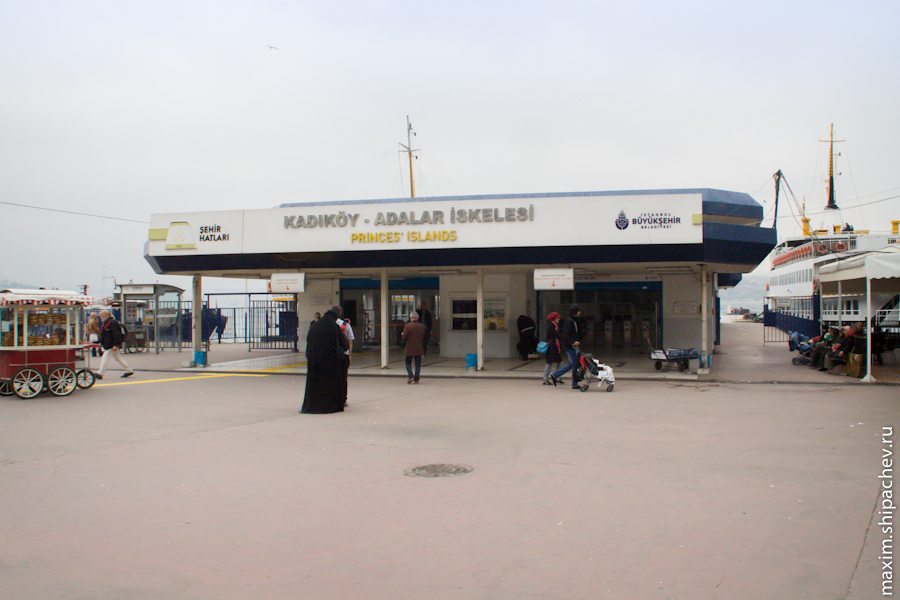
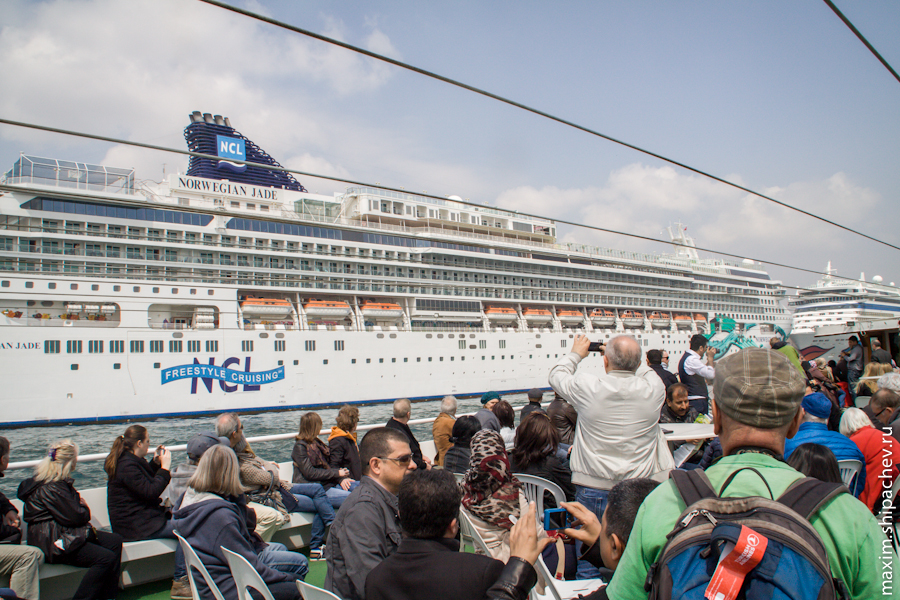
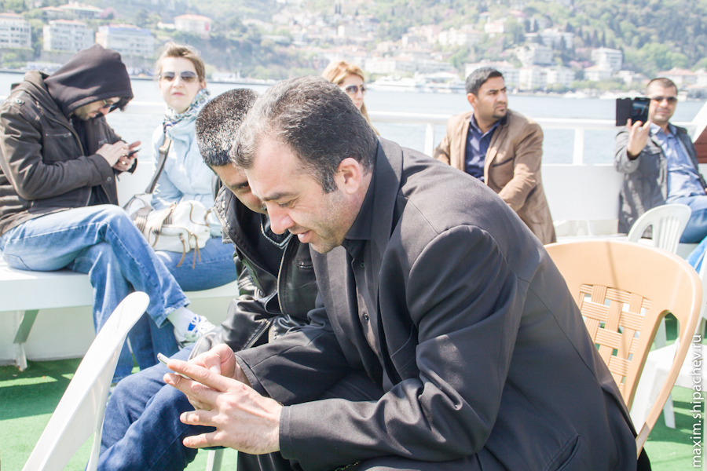
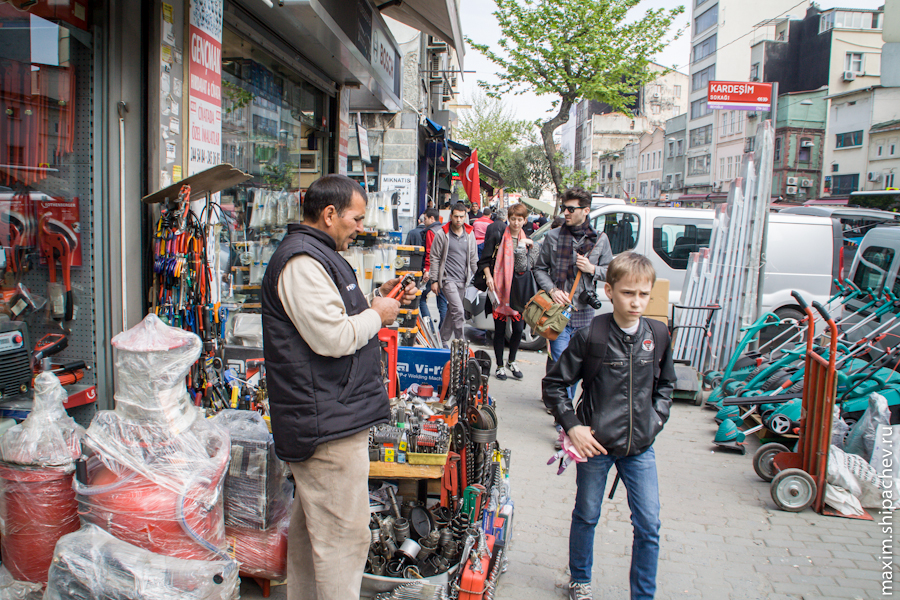

Передвигаться с коляской значительно веселее, поэтому сегодня планируем сходить на набережную Босфора, или, как его называют в Турции, Стамбульского пролива.
По дороге заходим позавтракать в Макдональдс, которых здесь хватает.
Нужно сказать, что, в отличие от путешествия по России, стамбульские сетевые фастфуды разочаровали. Если в России Макдональдсы, Бургер Кинги и прочие Кей-Эф-Си в основном являются глотком ориентированного на потребителя сервиса, то в Стамбуле, напротив — всё буднично и очень небюджетно.
Спускаемся от площади Таксим к проходящей вдоль Босфора улице Çırağan.

Лучший знак «Въезд запрещён», как известно, фундаментный блок, положенный поперёк. Но в Стамбуле мы увидели способ лучше. В начале улиц с односторонним движением установлены такие механизмы, которые позволяют под давлением автомобиля двгающегося в одном направлении складываются, а встречному автомобилю просто пробивают покрышки.
Спускаемся вниз
Вдоль набережной до причала Бешикташ можно доехать на трамвае, но мы гуляем пешком.
Заходим на набережную, погода пасмурная, народу практически нет.


Бензин в Турции один из самых дорогих в Европе, вроде даже самый дорогой. Литр 95-го стоит 45.70 лиры за 10 литров, то есть 82 рубля за литр, а вы Путина ругаете ещё.
Проходим мимо дворца Долмабахче. Дворец был построен в 19 веке, знаменит, в частности тем, что именно в этом дворце умер в 1938 году отец всех турков Мустафа Кемаль Ататюрк, основатель турецкой республики. Ататюрк для турков является примерно тем же, кем являлся Ленин для русских ещё лет 30 назад. После смерти Ататюрка дворец сделали музеем, а в 2007 году здесь официальная резиденция премьер-министра, и не было заметно, что он доступен для посещения туристами.
Почётный караул дежурит в стеклянных будках, периодически один из них выкрикивает какую-то команду и они выходят из будки и меняются местами. Думаю, разминают ноги таким образом.
Доходим до причала, решаем пока повременить с прогулкой по Босфору, дабы внинкуть в рынок, время-то терпит
Сворачиваем внутрь жилого района и попадаем… конечно на рынок.
Возвращаемся к трамваям
В Стамбуле такие вот могилы и целые мини-кладбища у дороги вполне привычные явления. Видимо умудряются строить город не беспокоя предков по пустякам.
Садимся на трамвай, чтобы доехать до Галатского моста, знаменитого моста через бухту Золотой Рог. Название мосту дала ещё одна достопримечательность Стамбула — Галатская башня.
Справедливости ради стоит сказать, что бывают в стамбульском общественном транспорте часы пик. Иногда нам пришлось пропускать 1-2 трамвая, чтобы войти в следующий с коляской.
Решаем перейти по мосту на другой берег бухты Золотой Рог.
Да, Стамбул претендует на столицу Летних Олимпийских Игр 2020.
Несмотря на то, что мечеть называется Новая, построена она в 16-17 веках, используется по назначению и сегодня.
Прямо у моста расположена пристань Эминёню, по названию пожалуй самого популярного среди туристов района Стамбула.
На пристани соблазняемся на тур по Босфору. Туры бывают двух видов: малый круг (до дальнего моста (Мост Султана Мехмеда Фатиха) через пролив без остановок, длительность 1,5 часа, стоимость 10 лир) и большой круг (до Чёрного моря, с несколькими остановками, длительность 5,5 часов, стоимость 15 лир). Мы выбираем вариант лайт.

Отправляемся в путь. В Стамбуле останваливаются многие круизные лайнеры. Морской круиз вообще — удовольствие недешёвое.

10 дней по европейским городам в каюте с балконом обойдутся на таком лайнере примерно в 40 тысяч рублей с человека.
Другие интересные цифры про круизный лайнер Norwegian Jade: судно строили два года, потратили 510 миллионов долларов, 15 палуб, 1067 человек экипажа, вместимость 2376 пассажиров, мощность ходовых электродвигателей 53040 л.с., 12 ресторанов, 11 баров, 3 бассейна.
Лайнеры будут меняться каждый день, я их ещё пофотаю, а пока плывём дальше.
В Стамбуле вообще ярко заметен культ турецкого флага. Флагштоки с огромными полотнищами стоят во всех ключевых точках на берегу. Флаги поменьше висят на зданиях, ещё меньше — в окнах жителей. В России прививаются другие культы.
Подплавыем ко второму висячему мосту через Босфор, разворачиваемся и плывём обратно вдоль азиатской части Стамбула.
Оба моста через Босфор — платные для автомобилей. Причём платить нужно только тем, кто едет из Европы в Азию.

Сроду не мог подумать, но социальная сеть «Одноклассники» чрезвычайно популярна среди турков. Неоднократно видел как они выкладывают туда фоточки, пишут комментарии, вставляют котиков и цветочки.
Особо стоит отметить, что в Турции достаточно редки смартфоны с тачскрином вроде Айфонов и прочих Самсунгов. В «Одноклассниках» все сидят вот с такими телефонами, как у девушки в деревенском автобусе, о котором позже…
Высаживаемся, возвращаемся по Галатскому мосту на свой берег.
Весь центральный Стамбул — сплошные магазины. Причём организовано всё это исторически довольно любопытно. Группа из нескольких улиц включает в себя уличные магазины только одной направленности. Эту особенность я отмечу ещё не раз, но сейчас сворачиваем с Галатского моста в сторону Галатской же башни и попадаем на Улицу Инструментов

Причём это ориентирование не направлено на туристов. Вряд ли ведь кто-то вернётся из Стамбула с газонокосилкой.
К Галатской башне ведёт довольно крутой подъём. Несколько подъёмов.
К сожалению у башни нас ждала очередь из жаждущих чекина и смотровой площадки туристов. Мы решили отложить посещение.
Возвращаемся на Таксим на метро.
По приезду на Таксим, решаем прокатиться на фуникулёре. Мы катались в Киеве, нам понравилось.
Новая линия стамбульского фуникулёра связывает уже знакомую нам площадь Таксим и уже знакомую нам трамвайную остановку Кабаташ.
Выходим на поверхность. С площади Таксим отправляются двухэтажные автобусы, так называемый City Sightseeing.
Поездка с остановками у многих ключевых достопримечательностей. Занимает почти целый день. Стоит 35 евро с человека. Мы пренебрегаем предложением.
Я выше писал, что качество сервиса в сетевых фастфудах оставляет желать лучшего. Поэтому если соберётесь перекусить по-турецки, рекомендую местный фастфуд Simit Saray.
Вовзращаемся в гостиницу, по дороге встречаем магазин, но сегодня слишком устали…